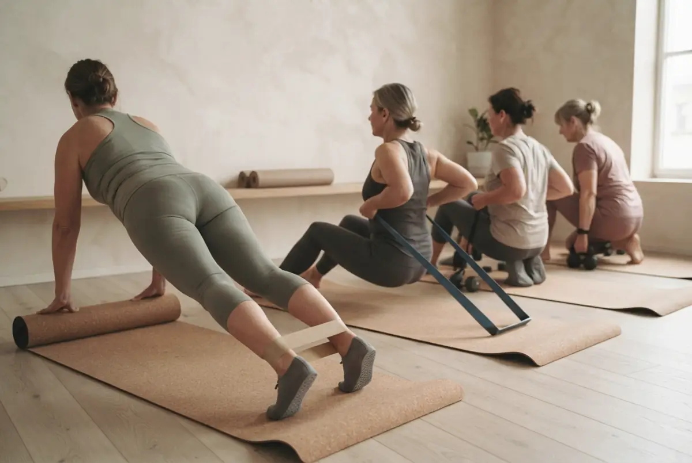
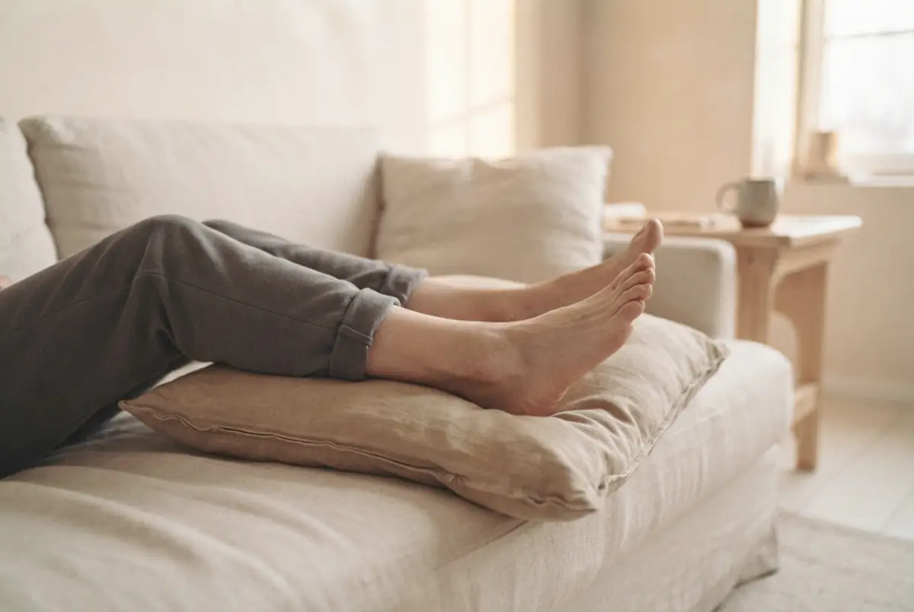
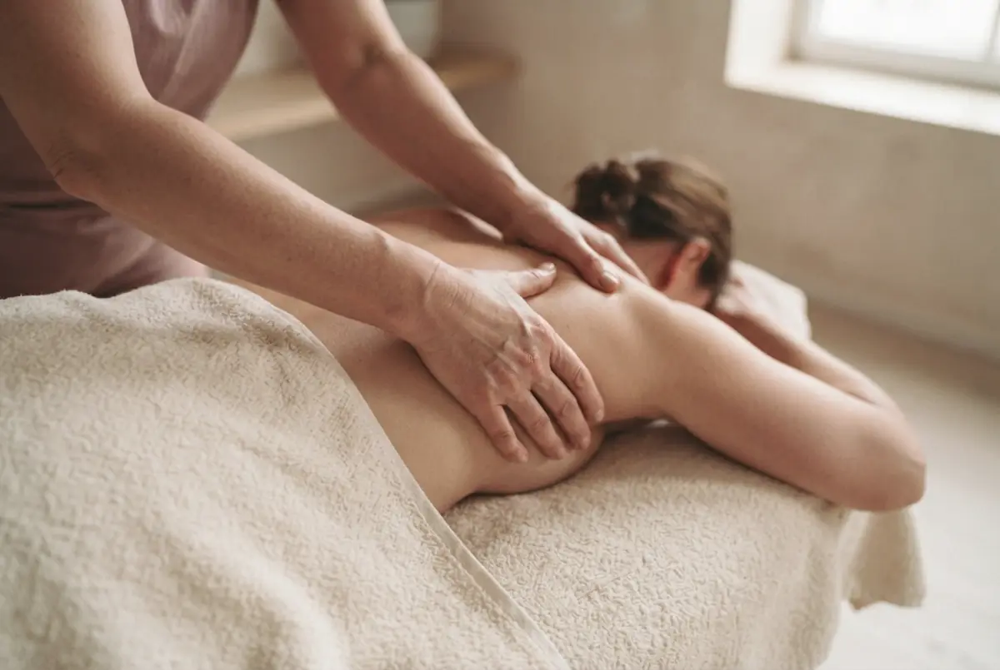
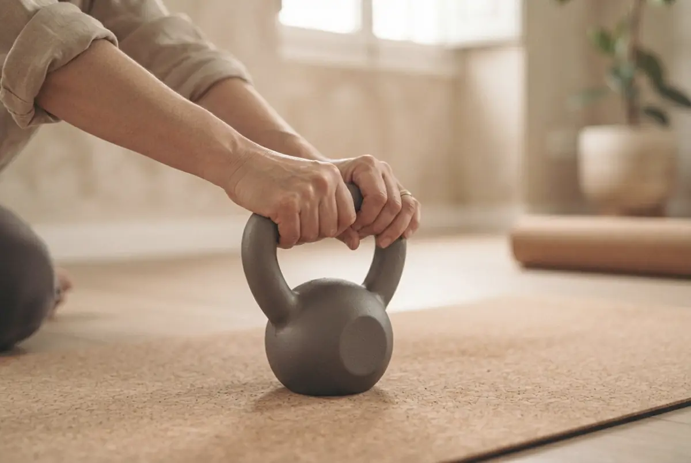

Tu silueta, por fueracon las manos y por dentro.con el movimiento
Soy Mari Carmen Figueras. Masaje, maderoterapia y entrenamiento para mujeres en Córdoba, en mi sala o en tu casa.
Lunes a viernes, de 10:00 a 20:00 · Córdoba capital



Las manos, para lo que notas pronto. El movimiento, para lo que se queda.
Lo que se deshincha con las manos vuelve si el cuerpo no se mueve. Por eso trabajo las dos cosas, con la misma persona siguiéndote.
Señálame dónde lo notas.
No hace falta que sepas cómo se llama el tratamiento. Toca la zona y te cuento qué haría.

1 · Espalda y cuello
«Cargo la espalda y el cuello»
Primero soltar. Después, que no vuelva.

2 · Cintura y abdomen
«Con la menopausia, mi cuerpo ya no es el mismo»
Cintura, energía y fuerza: lo que se puede hacer.
3 · Cadera y glúteo
«La piel de naranja me quita las ganas de ponerme según qué»
Qué puede hacer la maderoterapia, y qué no.
4 · Piernas
«Acabo el día con las piernas pesadas»
Pesadez, tobillos marcados, peor con el calor.

5 · Empezar
«Quiero empezar a moverme, pero no estoy en forma»
Empezamos desde donde estás hoy.
Así empezamos: tres pasos, siempre los mismos.
Antes de vender nada, te miro. La valoración es gratis y sales con tu plan hecho.
Me escribes
Por WhatsApp, con tus palabras: qué notas y desde cuándo. Te respondo yo.
Valoración gratis
Te mido, hablamos de tu salud y de lo que quieres conseguir. Sin prisas.
Tu plan
Manos, movimiento o las dos cosas. Tú decides, y cada pocas semanas lo revisamos juntas.
Por fuera, con las manos

Por dentro, con el movimiento
Lo que vas a oír por ahí, y lo que te digo yo.
Sin milagros. Con constancia y alguien que te acompaña.
Mejora su aspecto con constancia. Eliminarla, no.
La grasa no se funde con un rodillo. Se pierde con movimiento, comida y tiempo.
De eso se encargan tu hígado y tus riñones. Lo que sí notas es que desaparece la retención.
En mi sala o en tu casa.
En Córdoba capital, de lunes a viernes de 10:00 a 20:00.
- En la sala
Un espacio cubierto y tranquilo, con grupos de hasta 5. - A domicilio
Llevo la camilla o el material. Solo necesitas un hueco de 2 o 3 metros.
¿No sabes si llego a tu barrio? Pregúntame.
Lo que me preguntáis antes de venir.
Y si tu duda no está, escríbeme.
¿La valoración es gratis de verdad?
Sí. Te miro, hablamos de lo que buscas y te hago tu plan en ese momento. Después decides.
¿Duele la maderoterapia?
No debería doler. Puedes notar presión en las zonas más cargadas, pero la intensidad se adapta a ti y me vas diciendo.
¿Tengo que estar en forma para entrenar?
No. Empezamos desde donde estás. En grupos de hasta 5 te puedo corregir a ti.
¿Puedo hacer solo masaje o solo entreno?
Claro. Cada cosa funciona sola. Juntas se nota más, y te diré con honestidad cuándo te conviene una u otra.